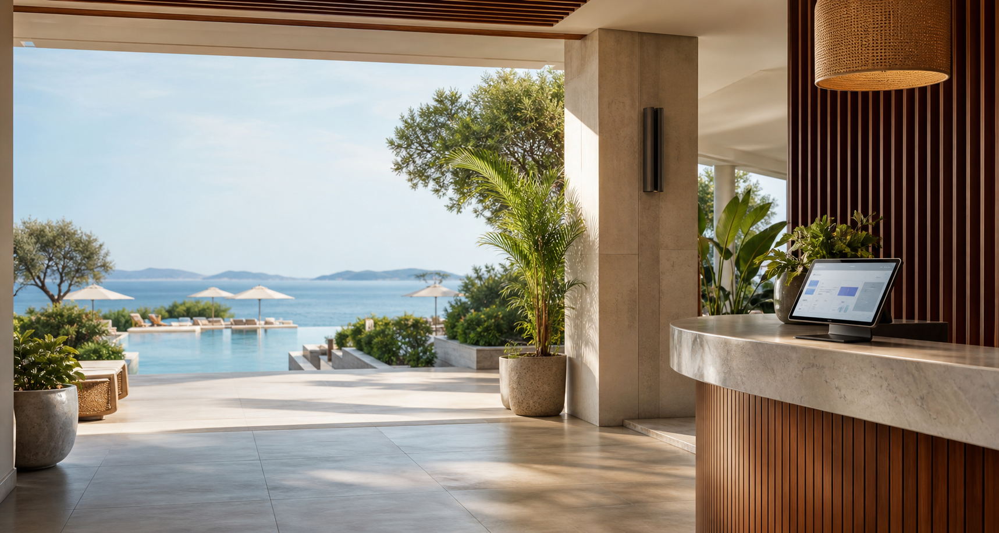

Otel web sitesi
Odalar, paketler, kampanyalar, galeri, konum, yorumlar ve doğrudan rezervasyon motoru.

Otel web sitesi + işletim paneli + kanal yöneticisi
Otellerin kendi web sitesinden doğrudan rezervasyon almasını, günlük operasyonu yönetmesini ve Booking, Expedia, Airbnb gibi kanallarla senkron çalışmasını hedefleyen bütünleşik platform.
Ürün fikri
Bu projenin ilk hedefi sadece otel tanıtım sitesi yapmak değil. Otelin oda stoğunu, fiyatlarını, rezervasyonlarını, personel görevlerini ve dış kanal satışlarını tek merkezde toplayan bir SaaS platformuna dönüşebilecek bir temel kurmak.
Modüller
Odalar, paketler, kampanyalar, galeri, konum, yorumlar ve doğrudan rezervasyon motoru.
Müsaitlik takvimi, fiyat planları, ödeme durumu, iptal koşulları ve misafir kayıtları.
Housekeeping, check-in görevleri, bakım talepleri, vardiya notları ve günlük iş akışı.
Booking benzeri OTA platformları, channel manager bağlantıları ve stok/fiyat senkronizasyonu.
Misafir deneyimi
İlk versiyonda amaç, misafirin otelin kendi sitesinde güvenle oda seçip talep veya ödeme oluşturması. Sonraki aşamada ödeme sağlayıcısı ve e-fatura akışı bağlanabilir.
Arka panel
Deniz Suite, 14:00 sonrası hazırla
Aile Odası, ekstra yatak
Rezervasyon onayı gönderildi
Çıkıştan 1 gün önce ödeme hatırlatması
Booking stok farkı kontrol edilmeli
203 numara bakım talebi açık
Tatil platformları
Doğrudan Booking API almak her işletme için kolay değildir; bu yüzden MVP’de channel manager mantığıyla soyut bir entegrasyon katmanı kurmak daha doğru. Böylece Booking, Expedia, Airbnb, Agoda veya yerel sağlayıcılar aynı stok ve fiyat kurallarını kullanabilir.
Yönlendirme